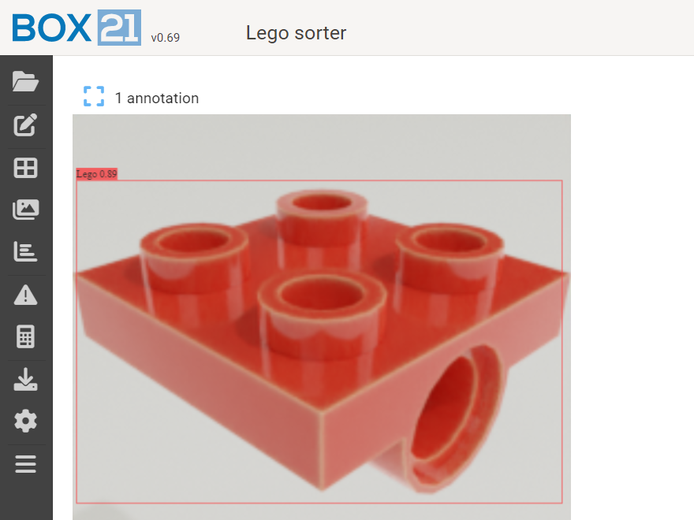
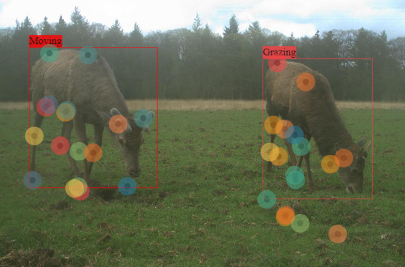
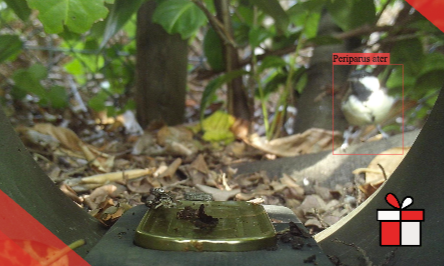

07 BOX21
AI on the rise
learn to program,
and a financial milestone.

You will probably have noticed that the possibilities of artificial intelligence (AI) are on the rise. Elon Musk sends his Starlink satellites over Ukraine using algorithms to map the advance of the Russian army. In agriculture, people are experimenting with smart machines that detect weeds, so that fewer pesticides are needed, and in brokerage, 'web scraping' is an emerging phenomenon in which a brokerage website receives advertisements to remove desired advertisements from other websites. My mother pointed out to me the problem that high schools are struggling with. Students who use chatbots such as ChatGTP to automatically generate papers using AI. And even at the Vilente nursing home, you might not say it, there is a test with sensors in the mattresses that can automatically detect conspicuous things, which is especially beneficial for night care. With limited deployment of staff, you have a 'view' of residents who go for a walk at night or who stop breathing, for example. In addition, of course, the ethical issue: Great that it can all be done automatically, but isn't that also at the expense of personal attention and intuition?
Soon after I abandoned the desire to code a red deer behaviour recognition algorithm on my own, I knocked on Ramon's door in December 2021 who offered me free use of his website BOX21. This was a nice interaction because I didn't have to dive into the complicated code for the time being and for Ramon because he found out which functionalities of the website already worked and which didn't. I uploaded 450 photos with red deer from the Hoge Veluwe National Park and labelled 150 photos as 'grazing', 150 photos as 'moving' and 150 photos as 'standing'. Easy peasy. The website was so user-friendly, with one push of a button there was already the model, or a program that could predict with 77% certainty what behaviour the animal showed for a new photo. Of course that was not satisfying because I also wanted to know what had happened behind the scenes.
It is now January 2023, a year later and only since a month has the feeling arisen for the first time that I can also program some tasks independently. The first year I focused on learning the backend system that we program in the Python programming language. This is the invisible part of the website for the user, such as the database. For example, the database is used as soon as someone logs in with his or her username and password, or when a user annotates objects on a photo. Now it gets a bit technical, but you can access the data in that database via endpoints. Especially in the beginning, I could easily spend a month creating and testing such an endpoint. Testing is done in a terminal (black screen) in which the computer gives you an indication of the type of error.
 Suppose you code
- a = …
- 3+a=
- 5+a=
Not only our website BOX21 contains AI. When typing our codes, we have recently started using AI ourselves to automatically generate suggestions based on what you have typed. They may seem like small details, but they are unprecedented changes. Our profession is going to change says Ramon. The expectation is that we will no longer have to type the codes ourselves, but that we describe what we want and that programming is done for us. As a programmer, you actually supervise. And if you can't figure it out, ask ChatGTP and he will help you in 9 out of 10 cases. GTP has all the knowledge, he is always available and comes up with a razor-sharp answer that you could easily have searched for a few hours yourself. ChatGTP doesn't care if I paste my entire script into it and my question is only about part of it. An enormous enrichment in the profession that allows people to be much more productive. Although I'm glad I started learning it when it didn't exist yet.
After a long period of financial malaise, a redeeming message came in February: Jorrit I see that you are doing your best and that you still have a way to go, but I would like to give you a salary increase. Finally the pressure was off the boiler. The fear of my laptop breaking down, no longer the need to scour Barcelona for the cheapest bottle of detergent, and just do a 20 euro a month for your friends in the Netherlands. I don't expect luxury holidays in the coming year, but I can pay for my room, workplace and a good shopping bag here and I am very happy with that at the moment.